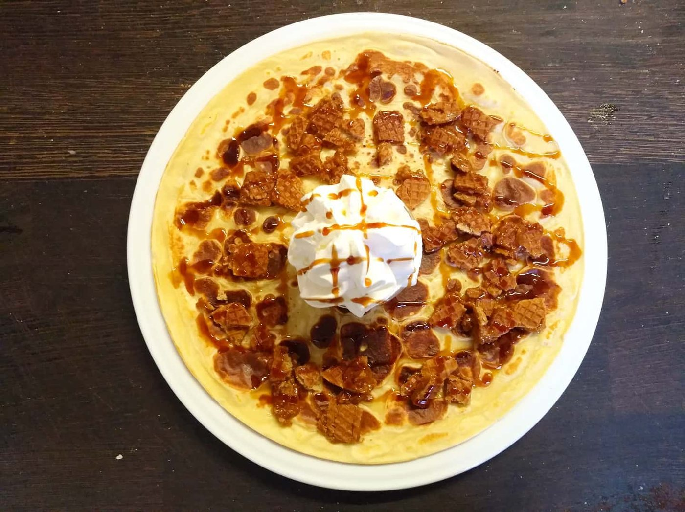
Pannenkoeken
Van naturel tot stroopwafel, of stel je eigen pannenkoek samen. Voor de kinderen met snoepjes en een verrassing.
Ook glutenvrij of veganBekijk kaart
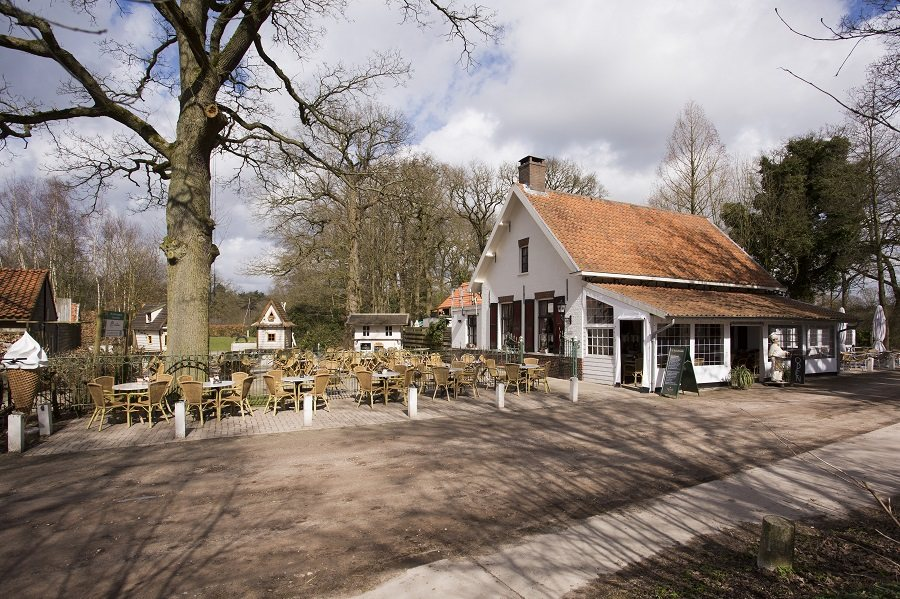
Herberg in de bossen van landgoed Wallsteijn in Achtmaal. Voor een pannenkoek, appeltaart of trappist op het terras, met een grote speeltuin voor de kinderen.
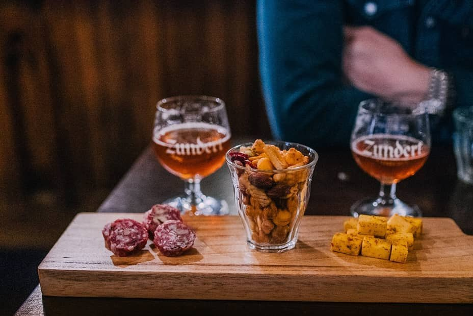
In de wintermaanden proef je bij ons op vrijdag- of zaterdagavond allerlei trappisten: donker, tripel of juist amber. Bij elke gang vertellen we over de brouwerij en de monniken, en serveren we een bijpassend gerecht.
Leuk voor een personeelsuitje, familiedag of met vrienden. Elk jaar bedenken we een nieuwe proeverij, dus terugkomen loont.
€ 75 per persoon · aanvang 18:30 uur
Voor jubilea, personeelsfeesten, verjaardagen en kinderfeestjes. Wij zorgen voor de activiteit én het eten, jij hebt er geen omkijken naar.
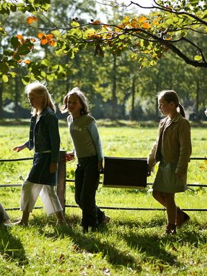
Ons meest gekozen uitje: ± 4,5 km langs de mooiste plekjes van Wallsteijn, met opdrachten onderweg.
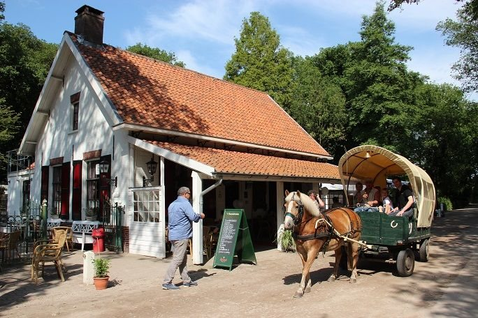
Een uur met de huifkar door de Buisse Heide en de Reten, met maximaal 30 personen.
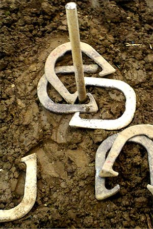
Ringsteken, hoefijzer gooien, doolhof run en meer. Bij slecht weer Vlaamse spellen binnen.
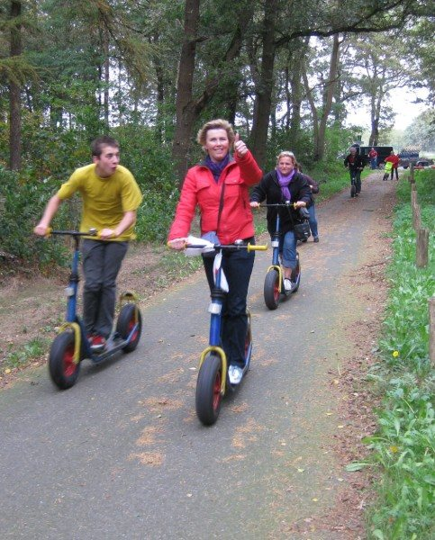
Crossen door het bos op een grote, stevige step. Ook te combineren met een puzzel- of GPS-tocht.
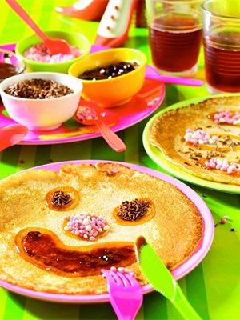
Tap je ranja en versier je pannenkoek, eventueel met een spannende GPS-speurtocht naar de schatkist.
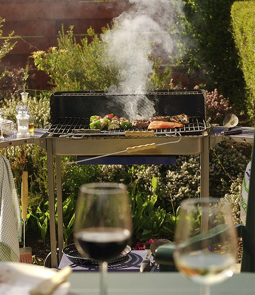
Complete barbecues en verzorgde buffetten, van broodbuffet tot stamppot en koud & warm buffet.
Ook mogelijk: workshop mondharmonica spelen (€ 35 p.p., inclusief mondharmonica). En via Zundert Events: tandem rijden, lasergamen, elektrische fietsen en Abraham- of Sarahpoppen huren.
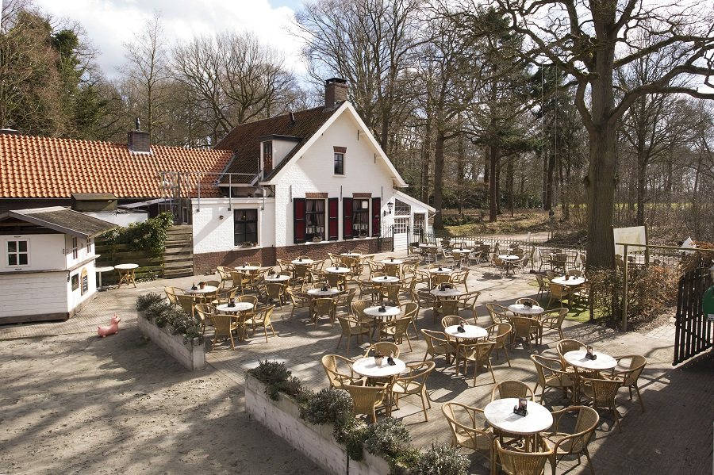
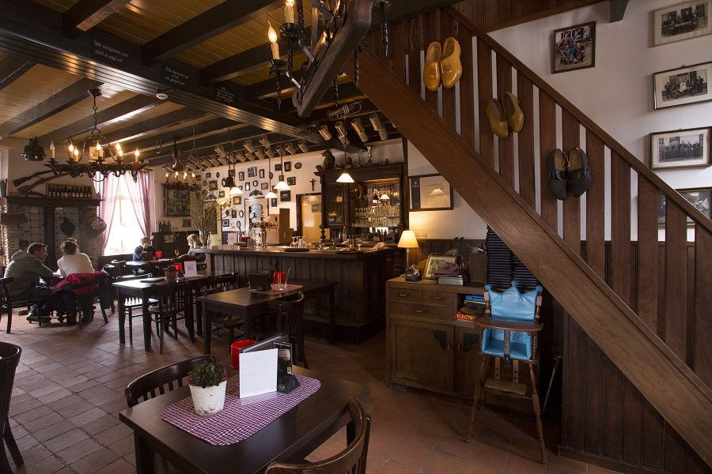
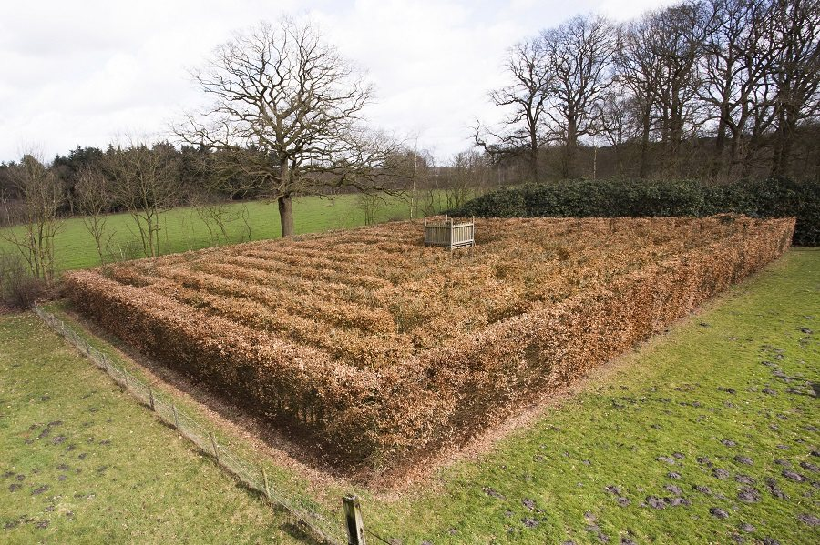
Op ons grote zomerterras is bijna altijd een plekje. We reserveren alleen voor grote groepen, maar kijken altijd met je mee. Binnen zit je tussen de antieke inrichting uit grootmoeders tijd.
Voor de kinderen is er een speeltuin met speelhuisjes en een doolhof. En na een wandeling over de Oude Buisse Heide smaakt een bakje koffie met appeltaart extra lekker. Onze favoriet: de rode route.
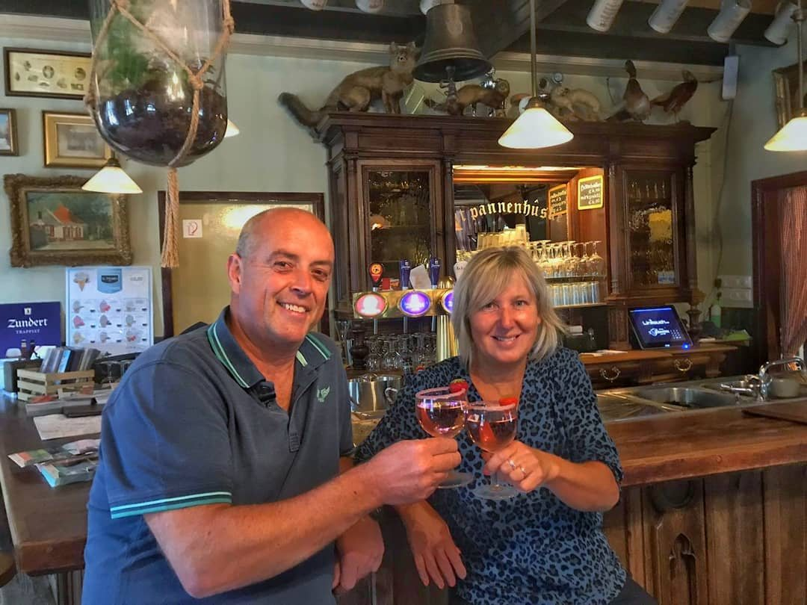
"Waar je nog gewoon op je gemak kunt eten en een goed gevuld bord krijgt voor een schappelijke prijs."
Ons cafeetje was in 1891 alleen voor de jagers, turfstekers en bewoners van landgoed Wallsteijn. Het dankt zijn naam aan de echte dakpannen. Nog altijd moet het authentiek blijven, en zo houden we het ook graag.
Sinds 2013 runnen Marga en Wil Nouws de herberg, samen met een jong en gezellig team. Santé!
Vertel ons met hoeveel personen je komt en wat je wilt doen. Voor een pannenkoek of kop koffie kun je gewoon binnenlopen.
We denken graag met je mee.